| Únicos | % Ausente | Média | Desvio padrão | Mínimo | Mediana | Máximo | |
|---|---|---|---|---|---|---|---|
| Capacidadebateria | 83 | 0 | 71.8 | 20.9 | 21.3 | 72.6 | 123.0 |
| Eficiencia | 85 | 0 | 190.1 | 28.9 | 137.0 | 184.0 | 295.0 |
| Preco | 241 | 0 | 388206.0 | 201411.7 | 132819.5 | 328662.0 | 1284020.0 |
| Autonomia | 76 | 0 | 379.6 | 104.2 | 135.0 | 385.0 | 685.0 |
| Velocidade.max | 35 | 0 | 183.3 | 34.3 | 125.0 | 180.0 | 282.0 |
| Desempenho | 87 | 0 | 7.0 | 2.8 | 2.1 | 6.7 | 19.1 |
4 Análise exploratória de dados e engenharia de atributos
4.1 Análise exploratória de dados
Antes da etapa de aprendizado e modelagem, é conveniente a análise exploratória dos dados, de forma a entender as variáveis disponíveis, distribuições individuais, estatísticas descritivas amostrais e correlações. As distribuições individuais e escala das variáveis podem indicar a necessidade de transformações. Já a presença de correlação entre preditores pode indicar multicolineariedade em regressão e classificação, enquanto a correlação entre resposta contínua e preditores pode sugerir que estes são importantes para explicar aquela. Tais análises auxiliam, portanto, na avaliação dos pré-processamentos necessários e nos possíveis métodos de aprendizado supervisionado adequados para os dados em avaliação.
A inspeção dos dados é útil para entender as variáveis em avaliação, permitindo compreender a escala, posição, dispersão e distribuição destas, de forma a guiar os primeiros passos da análise e modelagem. A Tabela 4.1 apresenta uma visão geral das variáveis numéricas do conjunto de dados carros_eletricos. Os dados constam de seis variáveis dimensionais, a saber, capacidade da bateria, eficiência, preço, autonomia, velocidade máxima e desempenho. Não há observações ausentes. Pelas estatísticas descritivas, observa-se que o Preço tem maior magnitude. O desempenho apresenta menor escala que as demais variáveis, podendo seu efeito ser menosprezado, caso alguma transformação não seja realizada ao ser considerado como preditor em modelos que sofrem de efeito de escala. A proximidade entre a mediana e média sugere uma distribuição simétrica e sem valores discrepantes para maior parte das variáveis.
No caso de variáveis categóricas, é comum avaliar a frequência e a proporção por categoria. A Tabela 4.2 apresenta este tipo de análise para o conjunto de dados celularesusados. Observa-se que a variável marca tem 14 categorias, sendo “Samsung”, “Apple”, “Xiaomi” e “Motorola” as com mais observações. A variável estado, a qual refere-se ao estado de conservação dos aparelhos, apresenta os níveis “Com avarias”, “Novo”, “Recondicionado” e “Usado”, correspondendo a 4,5%, 32,5%, 36% e 27% das observações nestas categorias, respectivamente.
| N | % | ||
|---|---|---|---|
| marca | Apple | 32 | 16.0 |
| Asus | 4 | 2.0 | |
| 9 | 4.5 | ||
| Huawei | 4 | 2.0 | |
| LG | 5 | 2.5 | |
| Motorola | 28 | 14.0 | |
| Nokia | 5 | 2.5 | |
| OnePlus | 8 | 4.0 | |
| Oppo | 7 | 3.5 | |
| Realme | 11 | 5.5 | |
| Samsung | 46 | 23.0 | |
| Sony | 4 | 2.0 | |
| Vivo | 5 | 2.5 | |
| Xiaomi | 32 | 16.0 | |
| estado | Com avarias | 9 | 4.5 |
| Novo | 72 | 36.0 | |
| Recondicionado | 65 | 32.5 | |
| Usado | 54 | 27.0 | |
| notafiscal | Nao | 96 | 48.0 |
| Sim | 104 | 52.0 | |
| fonte | Mercado Livre | 65 | 32.5 |
| OLX | 70 | 35.0 | |
| Trocafone | 65 | 32.5 |
A Figura 4.1 apresenta um gráfico de contagem para dois preditores categóricos do conjunto de dados celularesusados, a saber marca e estado, a qual se refere ao estado de conservação. Para todas as marcas a maioria dos itens a venda são “Novos”. Observa-se que há poucos itens “Com avarias”, independente da marca. Para a marca “Samsung” também há muitos celulares. A marca “Apple” é a que apresenta menos itens avariados.
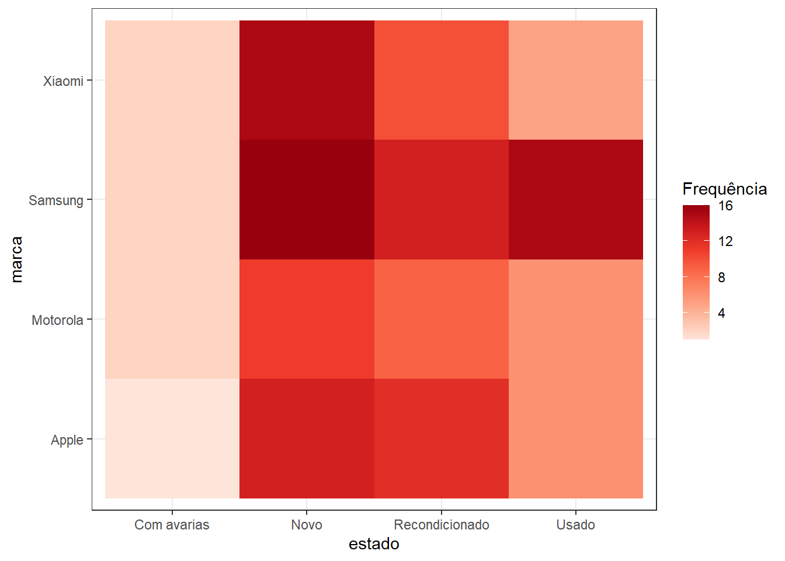
É comum avaliar a distribuição de preditores contínuos dentro de categorias da de um preditor qualitativo, de forma a avaliar interações entre ambos. O boxplot é uma boa opção gráfica para comparar distribuições. A Figura 4.2 apresenta boxplots de preços de carros segundo o modelo e tipo de câmbio. Observa-se que alguns modelos não tem os dois tipos de câmbio. O Corolla apresenta maior amplitude, possivelmente devido a variação no ano de fabricação dos veículos observados. Para a maioria dos veículos que apresentam ambos tipos de câmbio, observa-se maior distribuição do preço para os automáticos.
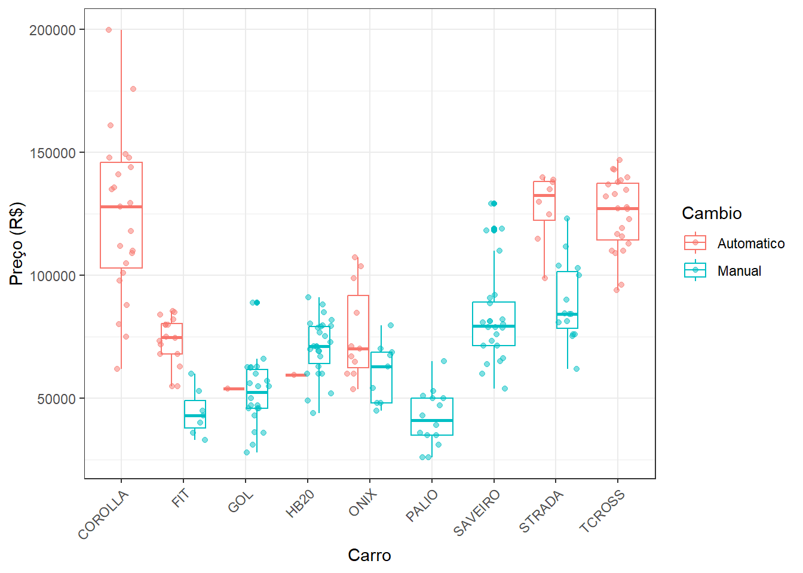
Quando há muitos preditores categóricos na análise, pode-se fazer uso de painéis horizontais e verticais, viabilizando a exibição de uma matriz de gráficos combinando os níveis dos preditores categóricos consideradas. A Figura 4.3 plota boxplots do preço de imóveis da cidade de São João del-Rei. Além do tipo de imóvel no eixo horizontal e se tem ou não área gourmet em cores, são considerados se tem ou não varanda nos painéis das linhas e se tem ou não imobiliária nos painéis das colunas. Para estes dados, há combinações das categorias dos preditores sem observações, uma vez que, por exemplo, não faz sentido um galpão com varanda. Tais gráficos viabilizam avaliar de forma conjunta o efeito de diversos preditores. Por exemplo, observa-se uma maior distribuição do preço de imóveis com área gourmet e administrados por imobiliária.
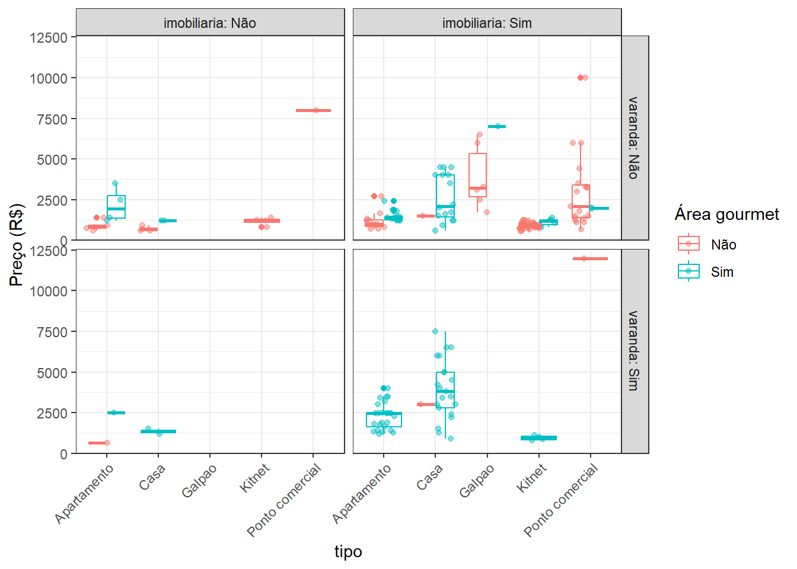
A estimativa da correlação a partir das observações disponíveis é útil, de forma a auxiliar na identificação de preditores correlacionados, bem como de respostas e preditores que apresentem possível relação. Sejam os preditores \(x_1\) e \(x_2\). O coeficiente de correlação amostral de Pearson é calculado segundo a Equação 4.1.
\[ r_{12} = \frac{\sum_{i=1}^{n}(x_{i1} - \bar{x}_1)(x_{i2} - \bar{x}_2)}{\sqrt{\sum_{i=1}^{n}(x_{i1} - \bar{x}_1)^2 \sum_{i=1}^{n}(x_{i2} - \bar{x}_2)^2}} \tag{4.1}\]
De forma equivalente, o coeficiente de correlação de Pearson pode ser calculado segundo a Equação 4.2, como a média dos produtos das variáveis padronizadas. Tomando, portanto, a matriz padronizada de observações dos preditores, \(\mathbf X\), de ordem \(n \times k\), pode-se obter a matriz de correlação amostral por \(\mathbf R = \mathbf X^T\mathbf X/(n-1)\). Tal resultado será útil na redução da dimensionalidade usando análise de componentes principais.
\[ r_{12} = \frac{1}{n-1}\sum_{i=1}^n \biggl( \frac{x_{i1} - \bar{x}_1}{s_1} \biggr)\biggl( \frac{x_{i2} - \bar{x}_2}{s_2} \biggr) \tag{4.2}\]
A Tabela 4.3 expõe o coeficiente de correlação amostral de Pearson entre comprimento e largura dentro das distintas espécies do conjunto de dados feijoes. Todas as correlações são positivas e moderadas, sendo a maior para o feijão “fradinho” e a menor para o feijão “branco”.
| feijao | r | n |
|---|---|---|
| branco | 0.27 | 50 |
| carioca | 0.50 | 50 |
| fradinho | 0.67 | 50 |
| preto | 0.55 | 50 |
| vermelho | 0.37 | 50 |
Uma forma de visualizar correlação entre variáveis contínuas é a partir do gráfico de dispersão, conforme plotado na Figura 4.4, sendo considerado no painel (a) o gráfico geral e no painel (b) os pares ordenados com a espécie de feijão destacada em cores. O coeficiente de correlação de Pearson entre tais variáveis sem considerar as espécies, conforme plotado no painel (a), é igual a 0,72, sendo maior que as correlações dentro das espécies, exibidas na Tabela 4.3.
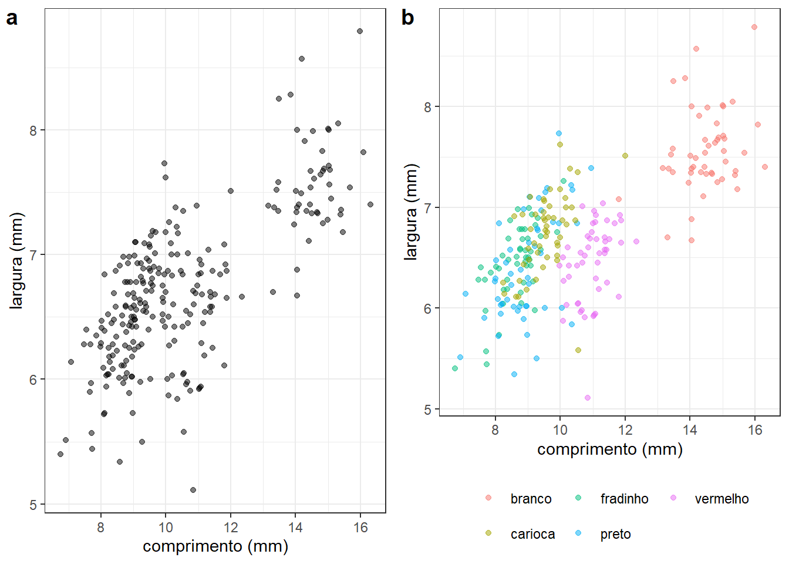
Ainda sobre gráficos de dispersão, também é possível plotar uma variável adicional contínua em escala de cor conforme e linha de regressão linear Figura 4.5(a), ou considerar uma outra forma de suavização para casos não-lineares, como a spline local, segundo a Figura 4.5(b). A regressão local não será abordada neste livro, mas métodos similares de suavização por splines serão abordados na Seção 4.2.9.
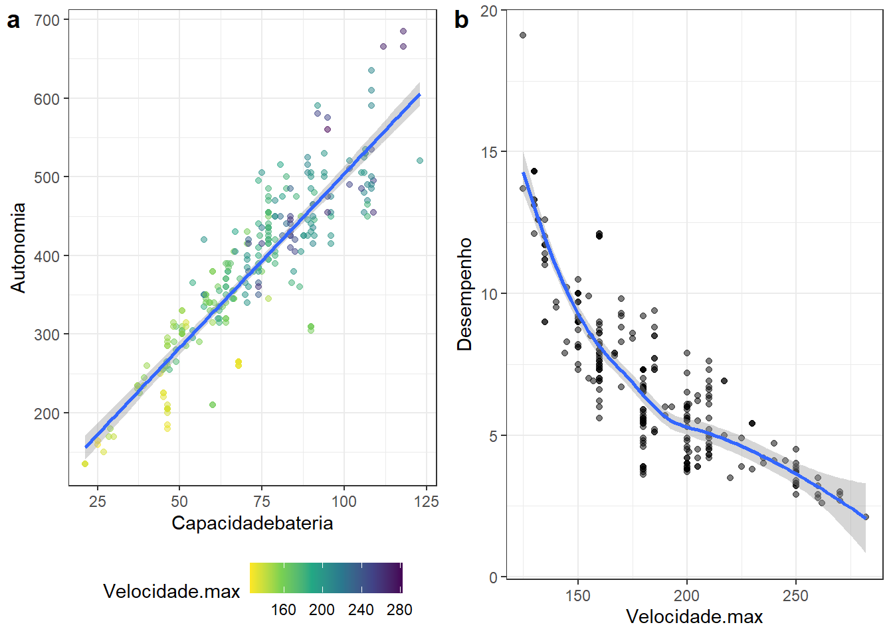
As correlações também podem ser observadas graficamente, por exemplo, usando o gráfico da Figura 4.6, como um mapa de calor de correlação. Correlações positivas são representadas em tons de vermelho, enquanto negativas em tons de o azul e ausência de correlação em branco. Neste caso, foi considerado o conjunto de dados folhasfrutas. Observa-se alta correlação positiva entre diversos preditores, havendo portanto, alta redundância entre estes. Há diversos preditores com correlação moderada entre si. Observa-se também correlação negativa entre a excentricidade e alguns preditores, por exemplo o raio mínimo (radius.min), o qual naturalmente diminui com o aumento da primeira.
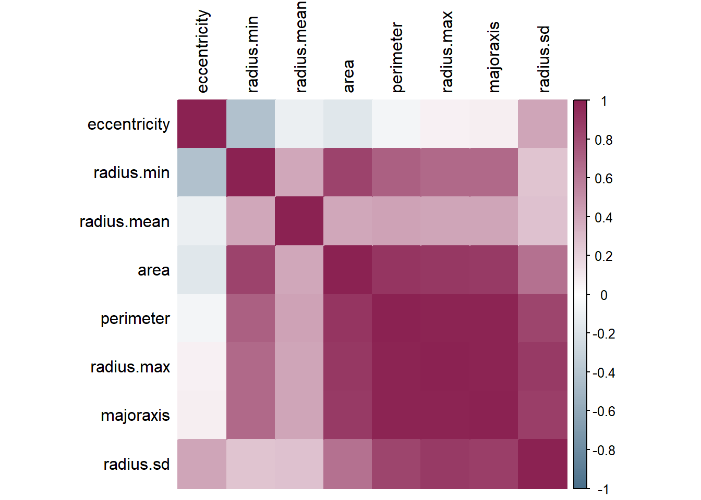
No caso de conjuntos de dados com muitos preditores, a avaliação da correlação pode ser ainda mais determinante, uma vez que a eliminação de preditores redundantes pode ser determinante para a qualidade do modelo. A Figura 4.7 apresenta o gráfico de mapa de calor de correlação para o conunto de dados soja. Apesar de muitos preditores não apresentarem correlações com as demais, há alguns com alta similaridade, por exemplo, coverage, radius_min, radius_mean, major_axis e caliper, indicando a necessidade de exclusão de alguns destas, ou de realização de alguma transformação para descrevê-los.
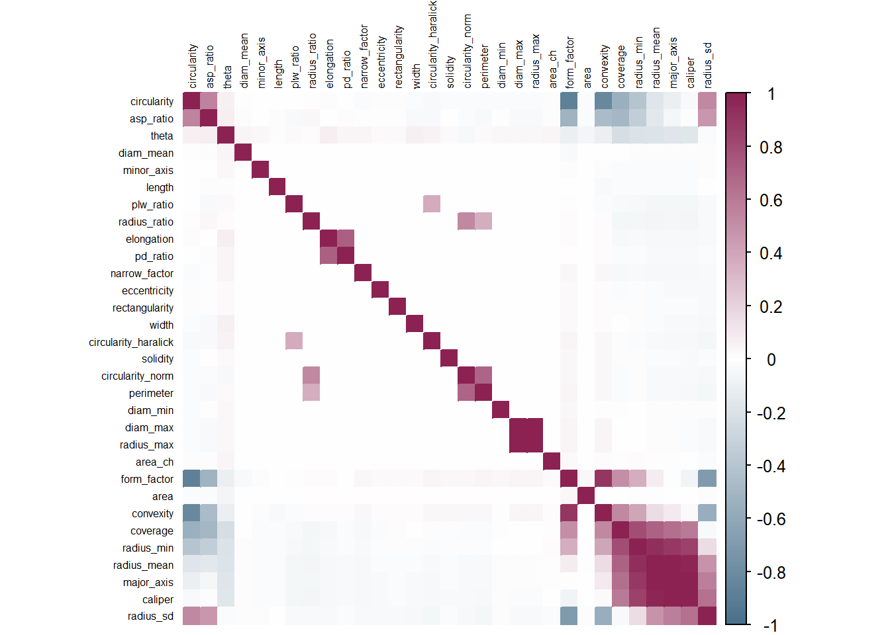
A Figura 4.8 apresenta um gráfico que explora tanto distribuições individuais quanto correlações para o conunto de dados feijao. A resposta categórica é plotada em escala de cor, sendo observados gráficos de densidade amostral individual dos preditores contínuos na diagonal principal, dentro das categorias da variável feijao, além de boxplots na linha superior e histogramas na primeira coluna. Os painéis abaixo da diagonal expõem diagramas de dispersão aos pares para os preditores contínuos, dentro das categorias da resposta feijao. Já os painéis acima da diagonal apresentam o coeficiente de correlação de Pearson geral e dentro das categorias da resposta e, também a correlação independente de categoria. Este tipo de visualização é uma opção interessante para avaliar a distribuição de variáveis bem como as possíveis correlações.
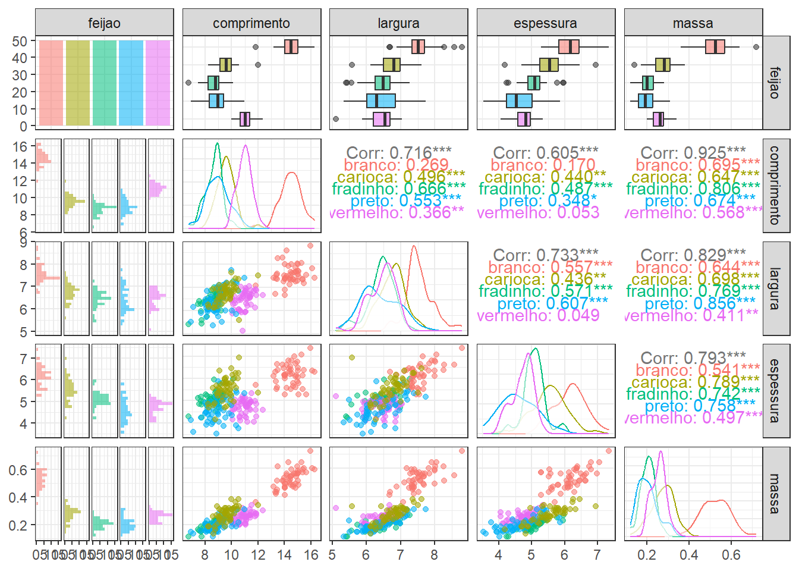
É possível visualizar o comportamento de uma resposta contínua de interesse em função de diversos preditores contínuos e categóricas. A Figura 4.9 expõe um gráfico de bolhas para o preço de apartamentos em algumas cidades das regiões de Alto Paraopeba, Campos das Vertentes e Zona da Mata mineira. Em relação aos preditores contínuos, considerou-se a área no eixo horizontal, o número de vagas no tamanho da bolha e o número de banheiros na escala de cor. Já tomando as variáveis discretas, nos painéis das colunas considerou-se a presença ou não de varanda, enquanto nas linhas, plotou-se a cidade. O aumento da área, vagas, banheiros e presença de varanda, em geral, sugere um preço maior. Entretanto, há outras variáveis não plotadas que podem mudar este cenário. Em relação às cidades, Congonhas, Juiz de Fora e Lavras apresentam itens com preço maior.
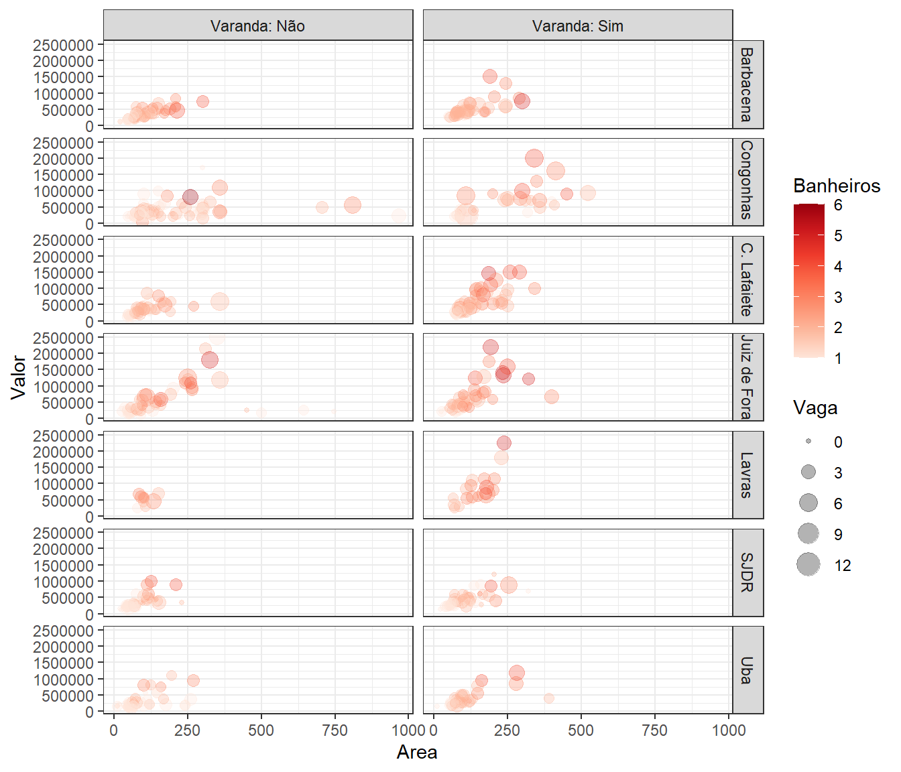
4.2 Engenharia de atributos
É comum observar problemas nas observações disponíveis diversos problemas, tais como valores ausentes, presença de observações duplicadas, entre outros, o que inviabiliza a aplicação de alguns métodos ou acarreta em vícios na modelagem. Também é frequente a presença de preditores com escalas distintas, acarretando, em alguns modelos, uma superestimativa de efeitos ou vício na modelagem devido a escala. Alguns métodos que só permitem preditores quantitativos exigem tratamentos específicos de preditores nominais, de forma a viabilizar sua inclusão nos modelos. Observa-se também em preditores e respostas contínuas problemas de distribuição, como assimetrias e valores discrepantes. A presença de preditores correlacionados deve ser evitada, uma vez que pode aumentar a variância do modelo. Estes e outros problemas devem ser endereçados antes da modelagem na tarefa que denominamos de engenharia de atributos.
Definição
Por engenharia de atributos ou feature engineering entende-se o processo de transformar dados brutos em preditores passíveis de consideração em modelos de aprendizado de máquina.
4.2.1 Transformação de variáveis
A distribuição das variáveis pode afetar os resultados da modelagem. A Figura 4.10 apresenta o histograma do Preço de motos usadas sem e com transformação logarítmica. Observa-se que o logarítimo ajuda a melhorar a simetria da distribuição, sendo útil para melhorar a distribuição tanto de preditores quanto de respostas contínuas.
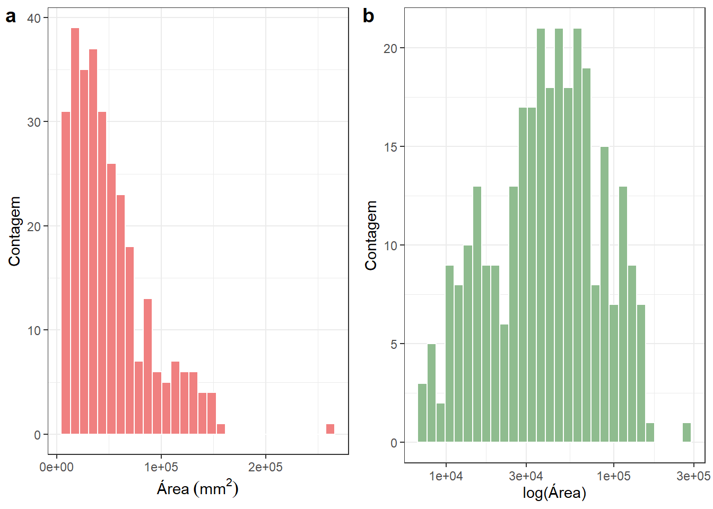
Há outras transformações mais sofisticadas para melhorar a distribuição das variáveis, por exemplo a de Box-Cox.
4.2.2 Imputação de valores ausentes
Em diversos conjuntos de dados, é comum a presença de valores ausentes tanto em variáveis numéricas, como em variáveis categóricas. A Tabela 4.4 apresenta as primeiras observações do conjunto de dados aluguel2025sjdr, sobre preço de aluguéis na cidade segundo características do imóvel. Há uma observação com valor indisponível (not available - “NA”) para a variável Vagas, a qual consiste no número de vagas para carros. Sugere-se, ao invés de excluir tal observação, uma vez que apresenta valores para todas as outras variáveis, substituir o valor indisponível pela mediana da variável Vagas. A mediana é útil para variáveis numéricas inteiras, pois preserva valores inteiros. Para preditores contínuos também sugere-se a mediana, pois é menos suscetível a valores discrepantes e assimetrias. Para o conjunto de dados e variável em questão a mediana é 0.
| Bairro | Quartos | Banheiros | Vagas | Área Gourmet | Mobiliado | Varanda | Imobiliária | Tipo | Preço |
|---|---|---|---|---|---|---|---|---|---|
| Tejuco | 1 | 1 | NA | N | N | N | N | Casa | 600 |
| 1 | 1 | 0 | N | N | N | N | Apartamento | 750 | |
| Fabricas | 1 | 1 | 0 | N | S | N | N | Apartamento | 900 |
| Dom Bosco | 1 | 1 | 0 | N | N | N | S | Apartamento | 900 |
| Matosinhos | 1 | 1 | 0 | N | N | N | N | Apartamento | 800 |
| Guarda Mor | 1 | 1 | 0 | S | N | N | S | Casa | 600 |
O conjunto de dados da Tabela 4.4 ainda apresenta uma observação simplesmente vazia para a variável Bairro. Neste caso é necessário, antes da atribuição, preencher tal observação com “NA”. Posteriormente, como a variável é categórica, pode-se substituir o “NA” pela moda, isto é, pela categoria mais frequente, ou por uma nova categoria, por exemplo “outro” ou “desconhecido”. A última alternativa é preferível, pois mantém a informação de ausência, além de evitar o vício relativo à moda. A Tabela 4.5 reapresenta as primeiras observações do conjunto de dados de aluguel2025sjdr após imputação da mediana na variável Vagas, e da categoria “desconhecido” na variável Bairro.
| Bairro | Quartos | Banheiros | Vagas | Área Gourmet | Mobiliado | Varanda | Imobiliária | Tipo | Preço |
|---|---|---|---|---|---|---|---|---|---|
| Tejuco | 1 | 1 | 0 | N | N | N | N | Casa | 600 |
| desconhecido | 1 | 1 | 0 | N | N | N | N | Apartamento | 750 |
| Fabricas | 1 | 1 | 0 | N | S | N | N | Apartamento | 900 |
| Dom Bosco | 1 | 1 | 0 | N | N | N | S | Apartamento | 900 |
| Matosinhos | 1 | 1 | 0 | N | N | N | N | Apartamento | 800 |
| Guarda Mor | 1 | 1 | 0 | S | N | N | S | Casa | 600 |
4.2.3 Remoção de valores discrepantes
Há conjuntos de dados que apresentam valores discrepantes, em muitos casos devido a erro de inserção dos dados. Tais observações podem enviesar os modelos, diminuindo a capacidade de generalização destes. A Figura 4.11 apresenta box-plots para a variável radius.mean antes e depois da remoção de um valor extremo.
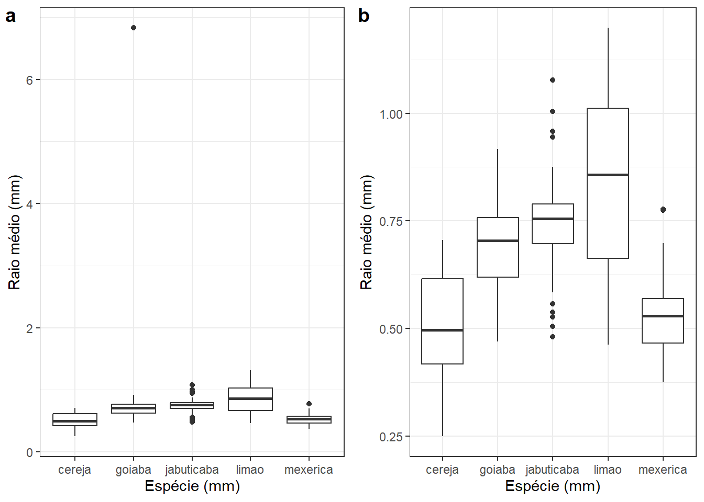
4.2.4 Normalização
A normalização é útil para evitar efeitos de escala e de unidades de medida. Embora alguns métodos não sofram influência de escala, métodos como máquina de vetores de suporte e redes neurais apresentam efeito significativo da ordem de grandeza dos preditores. Para evitar tal efeito, sugere-se a normalização destes segundo a Equação 4.3, a qual deixa-os com média nula e desvio-padrão unitário, além de adimensionais.
\[ x_{j,norm} = \frac{x_j-\mu_j}{\sigma_j} \tag{4.3}\]
4.2.5 Codificação binária
A codificação binária visa transformar preditores categóricos em binários, sendo útil para incluir estas em alguns modelos que só aceitam preditores quantitativos. A Tabela 4.6 apresenta as primeiras linhas após codificação binária do preditor Bairro do conjunto de dados aluguel2025sjdr.
| Colônia | Tejuco | Desconhecido | Fábricas | Dom Bosco | Matosinhos | Guarda Mor |
|---|---|---|---|---|---|---|
| 0 | 1 | 0 | 0 | 0 | 0 | 0 |
| 0 | 0 | 1 | 0 | 0 | 0 | 0 |
| 0 | 0 | 0 | 1 | 0 | 0 | 0 |
| 0 | 0 | 0 | 0 | 1 | 0 | 0 |
| 0 | 0 | 0 | 0 | 0 | 1 | 0 |
| 0 | 0 | 0 | 0 | 0 | 0 | 1 |
A codificação binária de um preditor categórico cria \(q-1\) variáveis binárias para \(q\) categorias do preditor categórico. A categoria não incluída é identificada quando todas as variáveis indicadoras assumem valor zero.
Nota
Uma codificação binária muito comum para preditores categóricos em aprendizado supervisionado é o one-hot encoding. Tal codificação gera uma coluna para cada categoria. Entretanto, não recomenda-se o uso de tal codificação, por acarretar em correlação perfeita entre as colunas, visto que, qualquer coluna de variável binária criada, para uma das \(q\) categorias, pode ser obtida como combinação linear das demais \(q-1\) variáveis binárias.
4.2.6 Agregação de categorias menos frequentes
Apesar de ter sido realizada de forma direta, a codificação binária na variável Bairro, do conjunto de dados aluguel2025sjdr, pode resultar em muitos novos preditores, devido à presença de muitas categorias nesta variável, sendo algumas com poucas observações, o que dificulta o treinamento devido à baixa representatividade destas. Sugere-se a agregação de categorias menos frequentes em uma nova categoria, denotada por exemplo “Outro”, com posterior realização da codificação binária. Tal procedimento diminuirá o número de preditores binários criados. A Tabela 4.7 apresenta o resultado da agregação para a variável bairro seguida de codificação binária. Observa-se que os bairros “Tejuco”, “Desconhecido” e “Guarda Mor”, além de outros não exibidos anteriormente, foram agregados na categoria “Outro”. Neste caso, considerou-se na agregação categorias com menos de 5% das observações.
| Colônia | Dom Bosco | Fábricas | Matosinhos | Outro |
|---|---|---|---|---|
| 0 | 0 | 0 | 0 | 1 |
| 0 | 0 | 0 | 0 | 1 |
| 0 | 0 | 1 | 0 | 0 |
| 0 | 1 | 0 | 0 | 0 |
| 0 | 0 | 0 | 1 | 0 |
| 0 | 0 | 0 | 0 | 1 |
4.2.7 Exclusão de variáveis com variância nula ou baixa
Em alguns conjuntos de dados há variáveis que não apresentam variância, isto é, só apresentam um único valor. Tais variáveis, obviamente, não serão úteis como preditores, devendo ser excluídas do conjunto de dados. Outras variáveis podem ser esparças, ou seja, apesar de apresentarem algumas observações distintas, exibindo um valor dominante repetido diversas vezes, apresentando baixa variância, às vezes praticamente nula. É conveniente a remoção destas variáveis.
4.2.8 Redução da dimensionalidade dos dados
Em muitos problemas de aprendizado supervisionado o número de preditores, \(k\), é elevado. Em alguns casos, o número de preditores pode até superar o número de observações, \(k>n\), o que impede a aplicação, por exemplo da regressão múltipla por mínimos quadrados ou da classificação via regressão logística. Na maioria dos problemas, parte dos preditores disponíveis não contribui para explicar a resposta de interesse. Ademais, a presença de correlação pode indicar redundância entre alguns preditores, sugerindo a exclusão ou a transformação de preditores correlacionados.
Retomando o conjunto de dados folhasfrutas, foi observado na Figura 4.6 que há alguns preditores altamente correlacionadas. Uma possibilidade seria excluir alguns, considerando a alta correlação aos pares. Por exemplo, caso seja considerada uma correlação de 0,9 ou maior para excluir algumas variáveis, os preditores perimeter e radius.max seriam excluídas por apresentarem alta correlação com outros.
A técnica de redução da dimensionalidade de preditores mais popular é a análise de componentes principais. Tal método visa, a partir de \(k\) preditores correlacionados, \(x_1, x_2, ..., x_k\), obter \(p\), \(p<k\) variáveis transformadas, chamadas de componentes principais, as quais consistem em combinações lineares das \(k\) originais, porém, são não correlacionadas.
4.2.8.1 Análise de componentes principais
Seja \(\mathbf R = \mathbf X^T\mathbf X/(n-1)\) a matriz de correlação de \(\mathbf X\), onde \(\mathbf X\) consiste na matriz de observações dos preditores e tem suas colunas padronizadas, isto é, \(x^*_j = (x_j-\mu_j)/\sigma_j\). A matriz \(\mathbf R\), para um conjunto de dados com duas variáveis, pode ser representada segundo a Equação 4.4, onde \(r_{12}\) é o coeficiente de correlação amostral de Pearson entre as duas variáveis. Na diagonal principal, os valores unitários correspondem à correlação da variável com ela mesma. Ademais, a matriz de correlação é simétrica, pois \(r_{12} = r_{21}\). Para o caso de 4 variáveis, por exemplo, a matriz de correlação é expressa na Equação 4.5, contendo todas as correlações possíveis aos pares.
\[ \mathbf{R} = \begin{bmatrix} 1 & r_{12} \\ r_{21} & 1 \end{bmatrix} \tag{4.4}\]
\[ \mathbf{R} = \begin{bmatrix} 1 & r_{12} & r_{13} & r_{14} \\ r_{12} & 1 & r_{23} & r_{24} \\ r_{13} & r_{23} & 1 & r_{34} \\ r_{14} & r_{24} & r_{34} & 1 \end{bmatrix} \tag{4.5}\]
Sejam os dados de dois preditores arbitrários com \(n=12\) observações apresentadas na Tabela 4.8. A Tabela 4.9 apresenta a matriz de correlação destes dados. Observa-se que as duas variáveis tem correlação positiva igual a 0,94, confirmando a alta redundância entre estas. Estas, se considerados com preditores de forma conjunta, sem nenhum tratamento antes da regressão ou classificação, acarretarão em multicolineariedade.
| x1 | x2 |
|---|---|
| -1.04 | -1.39 |
| -0.29 | -0.15 |
| 0.04 | 0.25 |
| -0.80 | -0.41 |
| 0.70 | 0.44 |
| 2.03 | 1.73 |
| 0.29 | 0.65 |
| 1.38 | 1.09 |
| -0.94 | -0.54 |
| -1.28 | -1.90 |
| -0.22 | -0.08 |
| 0.13 | 0.33 |
| x1 | x2 | |
|---|---|---|
| x1 | 1.00 | 0.94 |
| x2 | 0.94 | 1.00 |
A Figura 4.12 plota um gráfico de dispersão das observações de \(x_1\) e \(x_2\). Realizando a análise de componentes principais obtém-se novas variáveis ou direções, rotacionando as variáveis originais. A partir destas novas direções pode-se projetar as variáveis originais e obter variáveis não correlacionadas ou perfeitamente ortogonais, chamadas de componentes principais. Cada uma destas consiste em uma combinação linear das variáveis originais. Ademais, a primeira componente explica maior proporção da variabilidade dos dados que a segunda e assim sucessivamente. Logo, pode-se considerar uma componente principal apenas para explicar as duas originais, sendo esta plotada com, a seta azul escura.
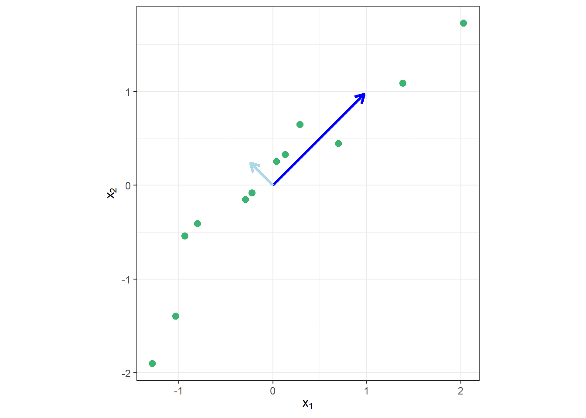
Seja o conjunto de dados feijoes, o qual apresenta 4 preditores. A Tabela 4.10 apresenta a matriz de correlação das observações destes preditores.
| comprimento | largura | espessura | massa | |
|---|---|---|---|---|
| comprimento | 1.00 | 0.72 | 0.61 | 0.92 |
| largura | 0.72 | 1.00 | 0.73 | 0.83 |
| espessura | 0.61 | 0.73 | 1.00 | 0.79 |
| massa | 0.92 | 0.83 | 0.79 | 1.00 |
A análise de componentes principais de \(\mathbf X^T\mathbf X\) via decomposição por valores singulares é realizada conforme segue.
\[ \begin{align} \mathbf X^T\mathbf X &= (\mathbf U \mathbf L \mathbf V^T)^T(\mathbf U \mathbf L \mathbf V^T) \\ \mathbf X^T\mathbf X &= \mathbf V \mathbf L^T \mathbf U^T\mathbf U \mathbf L \mathbf V^T \\ \mathbf X^T\mathbf X &= \mathbf V \mathbf L^T \mathbf L \mathbf V^T \\ \mathbf X^T\mathbf X &= \mathbf V \mathbf L^2 \mathbf V^T \\ \end{align} \]
Onde \(\mathbf{V}\) consiste na matriz de autovetores, de ordem \(k \times k\). Faz-se \(\mathbf W = \mathbf X \mathbf V\), com \(\mathbf{W}\) de ordem \(n \times k\), de forma a obter as observações das novas variáveis, ditas componentes principais. A matriz \(\mathbf L\), de ordem \(n \times k\), guarda na parte superior uma matriz diagonal com termos que determinam a importância das novas variáveis, \(\ell_1 \geq \ell_2 \geq \dots \geq l_k\), chamados de valores singulares. Mais detalhes sobre a decomposição em valores singulares são encontrados na ?sec-svd.
Na prática, recomenda-se não considerar todas as \(k\) colunas de \(\mathbf V\), mas apenas as \(p\) primeiras, de forma a garantir a redução da dimensionalidade dos preditores, \(p<k\). Cada componente principal \(w_{j}\) é a combinação linear das \(k\) variáveis originais ponderadas pelo \(j\)-ésimo autovetor \(v_{lj}\), o qual consiste na \(j\)-ésima coluna de \(\mathbf{V}\), segundo a Equação 4.6.
\[ w_j = x_1 v_{1j} + x_2 v_{2j} + \dots + x_k v_{kj} = \sum_{l=1}^k x_l \, v_{lj}, \quad j = 1, \dots, p \tag{4.6}\]
As observações ou escores das componentes principais são obtidas conforme segue.
\[ w_{ij} = \sum_{l=1}^k x_{il} \, v_{lj}, \quad i = 1, \dots, n, \quad j = 1, \dots, p \]
Explicitando cada componente para a \(i\)-ésima observação, tem-se:
\[ \begin{align} w_{i1} &= x_{i1}v_{11} + x_{i2}v_{21} + \dots + x_{ik}v_{k1} \\ w_{i2} &= x_{i1}v_{12} + x_{i2}v_{22} + \dots + x_{ik}v_{k2} \\ &\vdots \\ w_{ip} &= x_{i1}v_{1p} + x_{i2}v_{2p} + \dots + x_{ik}v_{kp} \end{align} \]
Ou de forma matricial, considerando que apenas as \(p\) primeiras colunas de \(\mathbf{V}\) são incluídas, tem-se:
\[ \mathbf{W} = \mathbf{X} \, \mathbf{V}_p \]
Para determinar \(p\), sejam \(\lambda_1 \geq \lambda_2 \geq \dots \lambda_k\) com \(\lambda_j=\ell_j^2/(n-1)\), \(j=1,\dots,k\) os valores singulares de \(\mathbf R\). Sugere-se selecionar os \(p\) primeiros autovetores de \(\mathbf V\) tal que a Equação 4.7
\[ \frac{\sum_{j=1}^p \lambda_j}{\sum_{j=1}^k \lambda_j} \tag{4.7}\]
seja maior que, por exemplo, 0,9, de forma a reter no mínimo 90% da informação das variáveis originais.
Considerando o conjunto de dados feijao, ao se realizar a análise de componentes principais, uma componente é suficiente para explicar mais de 0,9 da variabilidade das observações dos 4 preditores, sendo as primeiras linhas dos escores desta componente exibidos na Tabela 4.11.
| feijao | PC1 |
|---|---|
| fradinho | -12.25570 |
| fradinho | -12.00834 |
| fradinho | -12.30165 |
| fradinho | -11.31261 |
| fradinho | -12.25652 |
| fradinho | -10.90502 |
4.2.9 Suavização de preditores via splines
Além de adicionar termos de interação e polinomiais em regressão, conforme demonstrado nas Seção 2.2 e Seção 2.3, é possível realizar transformação mais complexas dos preditores via funções splines. Splines são funções polinomiais por partes, as quais são, nos casos mais comuns, funções cúbicas por partes, isto é, em domínios específicos do preditor, sendo estes definidos por divisões ou nós, os quais definem a complexidade da transformação. A Figura 4.13 plota suavizações realizadas via spline natural para possíveis preditores na previsão do preço de carros elétricos. Para mais detalhes sobre splines e spline natural ver Seção 4.3.3.
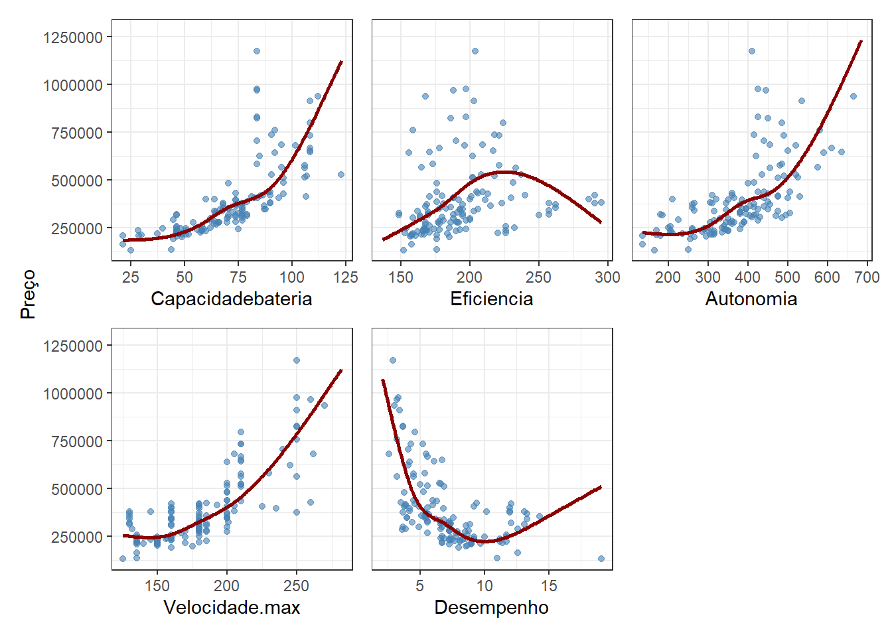
4.3 Implementações em R
4.3.1 Análise exploratória de dados
Carregando as bibliotecas.
library(sjdatar)
library(dplyr)
library(GGally)
library(ggplot2)Estatísticas descritivas de variáveis contínuas e frequência para variáveis categóricas. Recomenda-se o comando datasummary_skim do pacote modelsummary. O argumento type permite definir o tipo de variáveis a serem consideradas com opções “all”, “numeric” e “categorical”.
data(feijoes)
dados <- feijoes
library(modelsummary)
datasummary_skim(dados)Gráfico de frequência de variáveis categóricas. Para este exemplo foram filtradas as marcas mais frequentes do conjunto de dados celularesusados. Em sequência fez-se a contagem das combinações de marca e estado e usou-se o comando geom_tile para plotar a contagem das combinações em cores.
data(celularesusados)
dados <- celularesusados
dados |>
filter(marca %in% c("Apple", "Motorola", "Samsung", "Xiaomi")) |>
count(marca,estado) |>
ggplot(mapping = aes(y = marca, x = estado)) +
geom_tile(mapping = aes(fill = n)) +
scale_fill_distiller(palette = "Reds", direction = 1) +
labs(fill="Frequência")Para o box-plot usa-se o comando geom_boxplot() no ggplot.
data(carrosusados2025webmotors)
dados <- carrosusados2025webmotors
ggplot(dados, aes(x = Carro, y = Preco, col = Cambio)) +
geom_boxplot() #+
# facet_wrap(vars(Cambio)) # neste caso retirar argumento colPara plotar variáveis categóricas em painéis usa-se o comando facet_wrap. Aqui foi feito um boxplot, mas outros tipos de gráficos podem ser considerados.
data(aluguel2025sjdr)
dados <- aluguel2025sjdr
ggplot(dados, aes(x = tipo, y = preco, col = area_gourmet)) +
geom_boxplot() +
facet_grid(vars(varanda), vars(imobiliaria)) +
geom_point(position = position_jitterdodge(jitter.width = 0.4), alpha = 0.5)Correlação entre preditores por categorias da resposta.
data(feijoes)
dados <- feijoes
dados |>
group_by(feijao) |>
summarise(
r = cor(comprimento,largura,
use = "complete.obs"),
n = n()
)Os gráficos de dispersão são simplesmente gráficos de pontos feitos com geom_point() no ggplot. Pode-se adicionar outras variáveis em cores, e/ou tipo de ponto (argumento pch).
p1 <- ggplot(dados, aes(comprimento,largura)) +
geom_point(alpha = 0.5) +
labs(x="comprimento (mm)", y = "largura (mm)")
p2 <- ggplot(dados, aes(comprimento,largura,col=feijao)) +
geom_point(alpha = 0.5) +
labs(x="comprimento (mm)", y = "largura (mm)", col="") +
theme(legend.position = "bottom") +
guides(color = guide_legend(nrow = 2))
library(cowplot)
plot_grid(p1, p2, labels = c("a","b"))Ainda sobre os gráficos de dispersão, as variáveis em escala de cor podem ser categóricas ou contínuas. Pode-se adicionar linha de regressão linear ou de regressão local via geom_smooth com method = "lm" ou method = "loess" (padrão), respectivamente.
data(carros_eletricos)
dados <- carros_eletricos
p1 <- ggplot(dados, aes(x = Capacidadebateria, y = Autonomia, col = Velocidade.max)) +
geom_point(alpha = 0.5) +
geom_smooth(method = "lm") +
scale_color_viridis_c(direction = -1) +
theme_bw() +
theme(legend.position = "bottom")
p2 <- ggplot(dados, aes(x = Velocidade.max, y = Desempenho)) +
geom_point(alpha = 0.5) +
geom_smooth() +
scale_color_viridis_c(direction = -1) +
theme_bw()
plot_grid(p1, p2, labels = c("a","b"))O gráfico de correlação é realizado usando o comando corrplot do pacote homônimo.
data(folhasfrutas)
dados <- folhasfrutas
library(corrplot)
dados |>
select(area:eccentricity) |>
cor(use="na.or.complete") |>
corrplot::corrplot(method = 'color',
order = "AOE")data(soja)
dados <- soja
dados |>
select(area:coverage) |>
cor(use="na.or.complete") |>
corrplot::corrplot(method = 'color',
order = "AOE",
col = tmwr_cols(200),
tl.col = "black",
tl.cex = .5
)O gráfico de pares generalizados é feito com o comando ggpairs do pacote GGally.
data(feijoes)
dados <- feijoes
ggpairs(dados,
aes(col = feijao, alpha = .5),
progress = FALSE)O gráfico de bolhas é simplesmente um diagrama de dispersão com uma variável adicional na dimensão dos pontos. Para o exemplo a seguir também são consideradas variáveis em painéis. Sugere-se testar outras variáveis nos argumentos col, size, e nos painéis gráficos via facet_grid.
data(apartamentos2024mg)
dados <- apartamentos2024mg
library(forcats)
dados <- dados |>
mutate(Varanda = fct_recode(Varanda, "N"="n")) |>
mutate(Varanda = fct_recode(Varanda, "Não"="N")) |>
mutate(Varanda = fct_recode(Varanda, "Sim"="S")) |>
mutate(Cidade = fct_recode(Cidade, "SJDR"="Sao Joao del Rei")) |>
mutate(Cidade = fct_recode(Cidade, "C. Lafaiete"="Conselheiro Lafaiete"))
ggplot(dados, aes(x=Area, y = Valor, col = Banheiros, size = Vaga)) +
facet_grid(rows=vars(Cidade),cols=vars(Varanda),
labeller = labeller(Varanda = label_both)) +
geom_point(alpha = 0.3) +
scale_color_distiller(palette = "Reds", direction = 1)4.3.2 Engenharia de atributos
Para plotar a transformação logarítmica e avaliar se é interessante ou não,usa-se scale_x_log10() com geom_histogram no ggplot.
p1 <- ggplot(dados, aes(x = Preco)) +
geom_histogram(col= "white", fill = "lightcoral") +
labs(x=expression(Área ~ (mm^2)),
y="Contagem")
p2 <- ggplot(dados, aes(x = Preco)) +
geom_histogram(col= "white", fill= "darkseagreen") +
scale_x_log10() +
labs(x="log(Área)",
y="Contagem")
library(cowplot)
plot_grid(p1, p2, labels = c("a","b"))A transformação logarítmica de preditores contínuos pode ser realizada com step_log na receita. Em relação à resposta, segere-se transformar antes nos dados, uma vez que o referido step não inverte a transformação da resposta, só dos preditores. Ao se realizar a previsão, é importante inverter o logaritmo via exponenciação, exp().
dados <- dados |> mutate(y = log(y))
### ...
pred_teste <- predict(fit, new_data = dados_teste) %>%
bind_cols(teste) %>%
mutate(.pred_y = exp(.pred))A imputação de mediana para observações ausentes de preditores numéricos é realizada com o comando step_impute_median(). Caso tenha alguma observação vazia, isto é, sem ao menos “NA”, pode usar step_mutate(var_name = na_if(var_name, "")). O step_unknown() é útil para criar um novo nível, por exemplo “desconhecido” para um preditor categórico com “NA”, enquanto o step_impute_mode() substitui o “NA” pela moda.
data(aluguel2025sjdr)
dados <- aluguel2025sjdr
library(tidymodels)
receita <- recipe(formula = preco ~ .,
data = dados) |>
step_impute_median(all_numeric_predictors()) |>
step_mutate(bairro = na_if(bairro, "")) |>
# step_impute_mode(all_nominal_predictors())
step_unknown(bairro, new_level = "desconhecido")
receita_prep <- prep(receita)
dados_bake <- bake(receita_prep, new_data = NULL)
dados_bake |>
head()Após os tratamentos anteriores para preditores categóricos, sugere-se o agrupamento de categorias menos frequentes via step_other(), bem como a criação de variáveis binárias via step_dummy().
receita <- recipe(formula = preco ~ .,
data = dados |> select(-Link)) |>
step_impute_median(all_numeric_predictors()) |>
step_mutate(bairro = na_if(bairro, "")) |>
# step_impute_mode(all_nominal_predictors())
step_unknown(bairro, new_level = "desconhecido") |>
step_other(bairro, threshold = 0.05, other = "outro") |>
step_dummy(all_nominal_predictors())
receita |>
prep() |>
bake(new_data = NULL) |>
head()O step_zv() remove preditores com variância nula, enquanto o step_nzv() remove preditores com grande desequilíbrio entre as classes. No caso do comjunto de dados carrosusados2025webmotors, a variável Combustível apresenta apenas o nível “Flex”, sendo dispensável para a análise.
data(carrosusados2025webmotors)
dados <- carrosusados2025webmotors
receita <- recipe(formula = Preco ~ ., data = dados) |>
step_normalize(all_numeric_predictors()) |>
step_zv(all_predictors())
# step_nzv(all_predictors())
receita |>
prep() |>
bake(new_data = NULL) |>
head()O step_corr() consiste em um filtro de variáveis correlacionadas, sendo o valor limite de correlação aceito definido pelo argumento threshold.
data(folhasfrutas)
dados <- folhasfrutas
receita <- recipe(formula = especie ~ .,
data = dados) |>
step_corr(all_numeric_predictors(), threshold = 0.9)
receita |>
prep() |>
bake(new_data = NULL)A análise de componentes principais é realizada via step_pca(). O argumento threshold, neste caso define a proporção mínima de explicação da variabilidade dos dados originais requerida, por parte dos novos preditores.
data(feijoes)
dados <- feijoes
receita <- recipe(formula = feijao ~ .,
data = dados) |>
step_pca(all_numeric_predictors(),
threshold = 0.9)
receita |>
prep() |>
bake(new_data = NULL) |>
head() |>
gt()Para transformar um preditor com spline natural, usa-se o comando step_ns na receita. Deve-se definir o número de graus de liberdade do modelo com o argumento deg_free. A seguir, expõe-se a implementação do resultado observado na Figura 4.13 considerando Autonomia como preditor.
data(carros_eletricos)
dados <- carros_eletricos
set.seed(40)
split <- initial_split(carros_eletricos, prop = 0.50)
dados_treino <- training(split)
dados_teste <- testing(split)
dados_treino <- dados_treino |>
mutate(Autonomia = as.double(Autonomia))
rec_ns <- recipe(Preco ~ Autonomia, data = dados_treino) |>
step_ns(Autonomia, deg_free = 4)
wf_ns <- workflow() |>
add_recipe(rec_ns) |>
add_model(linear_reg())
fit_ns <- fit(wf_ns, data = dados_treino)
x_grid <- seq(min(carros_eletricos$Autonomia), max(carros_eletricos$Autonomia), length = 1000)
grid_autonomia <- tibble(Autonomia = x_grid)
pred_ns <- predict(fit_ns, new_data = grid_autonomia) |>
bind_cols(grid_autonomia) |>
rename(Preco = .pred)pdata <- ggplot(dados_teste, aes(x = Autonomia, y = Preco)) +
geom_point(alpha = 0.5) +
theme_bw()
pdata + geom_line(data = pred_ns, aes(x = Autonomia, y = Preco),
col = "violetred", lwd = 1)Um pré-processamento importante para variáveis categóricas com muitos níveis é o step_novel(). Tal pré-processamento evitará que, ao se deparar com níveis de variáveis categóricas não presentes nos dados de treino, o modelo irá chamar este nível desconhecido de “novo”.
Referências
Gareth, J., Daniela, W., Trevor, H., & Robert, T. (2013). An introduction to statistical learning: with applications in R. Spinger.
Hvitfeldt, E. (2024). Feature Engineering A-Z. https://feaz-book.com
Kuhn, M., & Silge, J. (2022). Tidy modeling with R: A framework for modeling in the tidyverse. ” O’Reilly Media, Inc.”.
Kuhn, M., & Johnson, K. (2023). Applied Machine Learning for Tabular Data. https://aml4td.org.
Apêndice
Decomposição em valores singulares
A decomposição em valores singulares é um método de fatoração de matrizes da álgebra linear que permite a decomposição de uma matriz em três outras, conforme Equação 4.8, onde \(\mathbf U_{n \times n}\) é a matriz de vetores singulares esquerda, \(\mathbf L_{n \times k}\) é a matriz de valores singulares e \(\mathbf V_{k \times k}\) é a matriz de vetores singulares direita.
\[ \mathbf X = \mathbf U \mathbf L \mathbf V^T \tag{4.8}\]
\[ \mathbf{X} = \begin{bmatrix} \color{red}{u_{11}} & \color{blue}{u_{12}} & \color{green}{\cdots} & \color{magenta}{u_{1n}} \\ \color{red}{u_{21}} & \color{blue}{u_{22}} & \color{green}{\cdots} & \color{magenta}{u_{2n}} \\ \color{red}{\vdots} & \color{blue}{\vdots} & \color{green}{\ddots} & \color{magenta}{\vdots} \\ \color{red}{u_{n1}} & \color{blue}{u_{n2}} & \color{green}{\cdots} & \color{magenta}{u_{nn}} \\ \end{bmatrix} \begin{bmatrix} \color{orange}{\ell_{1}} & 0 & 0 & \cdots & 0 \\ 0 & \color{cyan}{\ell_{2}} & 0 & \cdots & 0 \\ 0 & 0 & \color{purple}{\ell_{3}} & \cdots & 0 \\ \vdots & \vdots & \vdots & \ddots & \vdots \\ 0 & 0 & 0 & \cdots & \color{brown}{\ell_{k}} \\ 0 & 0 & 0 & \cdots & 0 \\ \vdots & \vdots & \vdots & \vdots & \vdots \\ 0 & 0 & 0 & \cdots & 0 \\ \end{bmatrix} \begin{bmatrix} \color{orange}{v_{11}} & \color{orange}{v_{21}} & \color{orange}{\cdots} & \color{orange}{v_{k1}} \\ \color{cyan}{v_{12}} & \color{cyan}{v_{22}} & \color{cyan}{\cdots} & \color{cyan}{v_{k2}} \\ \vdots & \vdots & \ddots & \vdots \\ \color{brown}{v_{1k}} & \color{brown}{v_{2k}} & \color{brown}{\cdots} & \color{brown}{v_{kk}} \\ \end{bmatrix} \]
Na análise de componentes principais as matrizes \(\mathbf L_{n \times k}\) e \(\mathbf V_{k \times k}\) são mais importantes, visto que a última determinará as novas direções ou eixos das variáveis transformadas, enquanto a primeira a importância destas, uma vez que \(\ell_1 \geq \ell_2 \geq \dots \geq l_k\).
4.3.3 Splines
Para bem entender as funções splines mais complexas, é importante entender os métodos iniciais de funções por partes com a função escada e os polinômios por partes. Em sequência, fica mais fácil o entendimento das splines cúbicas e seus desenvolvimnetos, como a spline natural.
4.3.3.1 Funções escada
As funções escada consideram a divisão do domínio do preditor, estimando uma constante para cada divisão. É um modelo que se parece com uma árvore de decisão para uma variável, porém os algoritmos e, portanto, modelos obtidos são distintos.
Para realizar a divisão no domínio pode-se utilizar de funções indicadoras \(I(.)\) que recebem 1 caso a condição seja satisfeita e 0 caso contrário. São, portanto, criadas divisões a partir da definição de nós no espaço do preditor, \(\xi_1, \xi_2, \ldots, \xi_G\), onde \(G\) é o número de nós. Por exemplo, para dois nós:
\[ \begin{matrix} C_1(x) = I(x<\xi_1)\\ C_2(x) = I(\xi_1 \leq x < \xi_2)\\ C_3(x) = I(x \geq \xi_2)\\. \end{matrix} \]
Para qualquer valor de \(x\) é importante observar que \(C_1(x)+C_2(x)+C_3(x)=1\). Uma função escada para dois nós pode ser definido conforme a Equação abaixo. Pode-se observar que o resultado estimado será \(\beta_0+\beta_1\) ou \(\beta_0+\beta_2\) ou \(\beta_0+\beta_3\), para \(C_1(x)\) ou \(C_2(x)\) ou \(C_3(x)\) unitário, respectivamente.
\[ \hat{y}_i=\beta_0+\beta_1C_1(x_i)+\beta_2C_2(x_i)+\beta_3C_3(x_i) \]
Considerando \(\beta_0 = \overline{y}\), \(\beta_j=(\overline{y}|\xi_{j-1}\leq x <\xi_{j})-\overline{y}\), ou seja, cada coeficiente que multiplica as funções indicadoras consiste na diferença entre a média das observações na divisão e a média geral. Ao final, o valor previsto consiste em uma constante que é a média das observações de treino da região.
Para os dados de carros elétricos, considerando o Preço segundo a Autonomia, uma função escada considerando duas divisões é plotado na Figura 4.14.
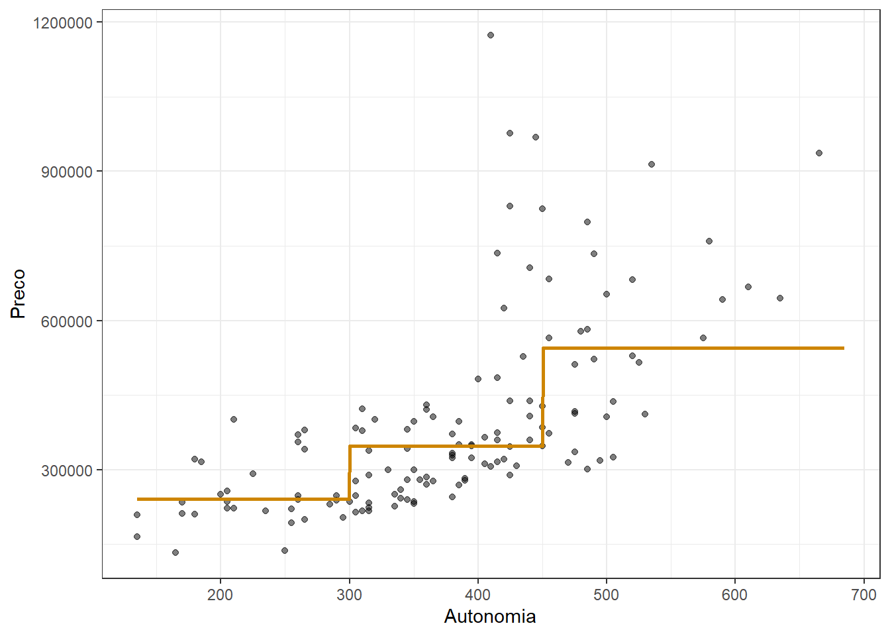
4.3.3.2 Polinômios por partes
Uma regressão polinomial cúbica por partes considerando apenas um nó ou divisão consiste em um modelo definido da seguinte forma:
\[ \hat{y}_i = \biggl\{ \begin{matrix} \beta_{01} + \beta_{11}x_i + \beta_{21}x_i^2 + \beta_{31}x_i^3, x_i < \xi\\ \beta_{02} + \beta_{12}x_i + \beta_{22}x_i^2 + \beta_{32}x_i^3, x_i \ge \xi, \end{matrix} \]
onde \(\xi\) consiste em nó ou divisão no domínio da variável regressora \(x\) e os coeficientes diferem para cada uma das regiões obtidas. Para o exemplo do Preço em função da Autonomia dos carros elétricos, um modelo de regressão polinomial cúbico por partes, considerando dois nós (300 e 450 km), é plotado na Figura 4.15.
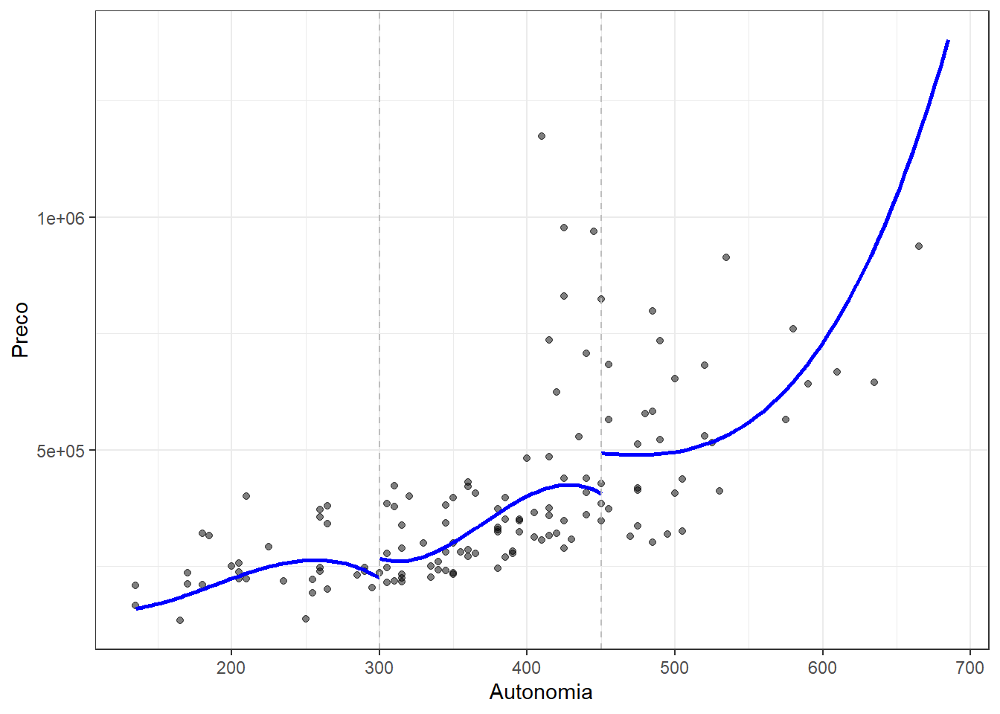
Um problema deste modelo é a descontinuidade e falta de suavidade nas divisões. Para garantir a continuidade, uma restrição de igualdade na transição pode ser considerada. Uma forma interessante de definir os nós é a partir dos percentis, de forma que cada divisão contenha um número igual de observações.
4.3.3.3 Spline cúbica
Considerando uma função de uma variável \(f(x)\), \(x \in \mathbb{R}^1\), seja \(h_m(x)\) a \(m\)-ésima transformação de \(x\), \(m=1, \ldots, M\). Um modelo considerando esta transformação pode ser representado conforme:
\[ f(x) = \sum_{i=1}^M \beta_{(m-1)} h_m(x) \]
As funções de transformação \(h_m(X)\) para uma spline cúbica com, por exemplo, dois nós, são geralmente \(h_1(x) = 1\), \(h_2(x) = x\), \(h_3(x) = x^2\), \(h_4(x) = x^3\), \(h_5(x) = (x - \xi_1)_+^3\), \(h_6(x) = (x - \xi_2)_+^3\), onde \(\xi_1\) e \(\xi_2\) são nós e \(t_+\) denota a parte positiva desses domínios:
\[ (x - \xi)_+^3 = \biggl\{ \begin{matrix} \text{0, }x< \xi\\ (x - \xi)^3\text{, } x\ge\xi \end{matrix} \]
Considerando essas transformações, a função obtida é um polinômio cúbico por partes com restrição de continuidade nos nós. De forma geral, uma spline cúbica terá \(4 + g\) graus de liberdade, onde \(g\) é o número de nós.
No tidymodels, essa construção é feita nativamente via step_bs() do pacote recipes, que utiliza B-splines (cúbicas por padrão) para gerar as colunas de transformação. Para o Preço em função da Autonomia, considerando deg_free = 4 (equivalente a três nós internos), tem-se o resultado plotado na Figura 4.16.
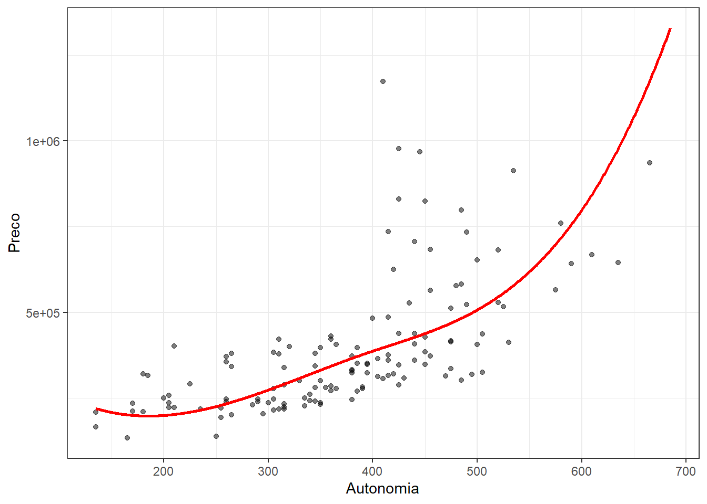
4.3.3.4 Spline natural cúbica
Outro detalhe considerado na spline cúbica é a linearização nas caudas. Tal modificação visa diminuir a variabilidade nos extremos do modelo. Para tal deve-se apenas excluir os termos envolvendo as transformações quadrática e cúbica para todo o domínio de \(x\), isto é, \(h_3(x) = x^2\), \(h_4(x) = x^3\). Este modelo é conhecido como spline natural cúbica.
No tidymodels, isso é feito nativamente via step_ns(), baseado em splines::ns(). Para o Preço em função da Autonomia, tem-se o resultado da Figura 4.17
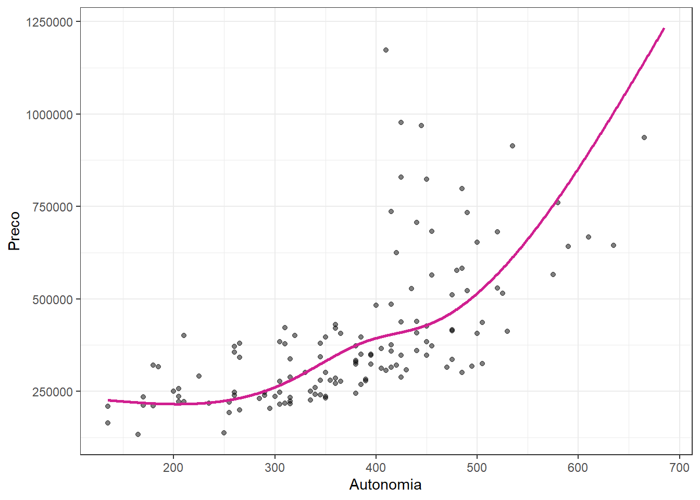
Existem outros métodos de regressão por splines os quais não serão abordados aqui. Dentre estes destacam-se a regressão local. O leitor é convidado a ler as referências utilizadas neste texto para mais informações.
4.3.3.5 Comparação: spline cúbica vs spline natural
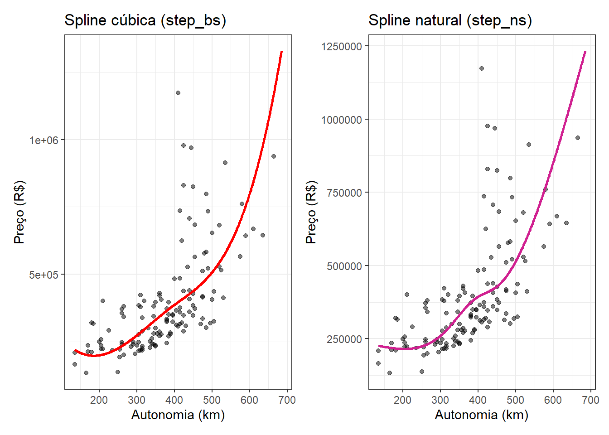
4.4 Exercícios
O conjunto de dados
apartamentos2024mgapresenta variáveis numéricas e categóricas. Obtenha as estatísticas descritivas para as numéricas e as tabelas de frequências para as contínuas.Ainda considerando o conjunto de dados
apartamentos2024mg, obtenha um gráfico de frequência considerando as variáveisCidadeeVaranda.Para o mesmo conjunto de dados, obtenha um box-plot do preço dos apartamentos em função das cidades. Considerando outras variáveis do conjunto de dados, explore outros argumentos presentes na estética (
aes) doggplot.Obtenha uma receita adequada para processar as variáveis do conjunto de dados
apartamentos2024mg. Explique a necessidade de cada pré-processamento (step_...) adicionado.Considerando o conjunto de dados
motos_usadas2obtenha gráficos de correlação aos pares e distribuições individuais entre as variáveis contínuas. Faça dois gráficos alternando na escala de cor as variáveisMarcaeCâmbio.Faça uma receita adequada para prever o preço das motos do conjunto de dados
motos_usadas2em função dos preditores disponíveis.